01
学校 · 家长会议
大家追问谁偷了器材，他坐在被感谢的位置上。
剧情事实家长质问器材失窃与雨果事件，调查者澄清雨果未被认定为窃贼。校方感谢休病假的沃尔特到场，他说明缺失器材。 [1][2]
这一场为什么重要 · 个人解读
公开追责的场合，被真正的窃取者用老师身份参与。家长的恐慌也会把持有大麻、偷窃和贩卖混为一谈。调查者不得不纠正这些推论，沃尔特却能继续享受自己原有形象带来的信任。
因此 →课堂与犯罪的边界，已经只能靠他继续表演维持。

他说只想做生意，
谁来规定生意的规则？
一顶头饰，一次周末谎言，一笔终于完成的供货。
钱到手时，他们才看清没有被解决的危险。
剧透边界 剧透截至 S01E07，包含本集结尾
12 个剧情节点 · 8 位人物 · 04 组冲突季终让沃尔特与杰西面对上集许下的数量：原料不够、时间不够，钱也不能解决每一道限制。他把更大的承诺当成突破口，家庭里则用“为了家人”的语言试探边界。等到蓝色制品终于换来认可，暴力仍在最成功的时刻爆发，证明做好产品远没有等于掌握规则。
读这一集，跟住三条线承诺与瓶颈 / 好意与授权 / 利润与暴力
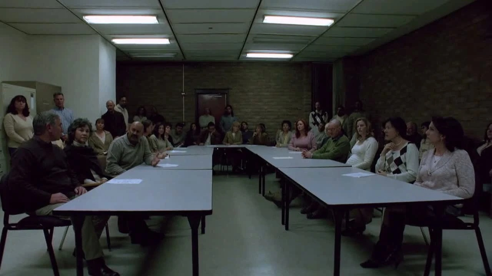
剧情事实学校举行家长会议，调查者纠正雨果就是窃贼的推断。沃尔特以化学部门负责人的身份到场，列举被偷走的设备。 [2]
个人解读他同时扮演了造成问题的人和帮助说明问题的人。尊敬的职业身份使这场公开问责没有立即指向自己，也让后来“只想做生意”的说法始终带着一层被他人承担的代价。
本页只使用截至 S01E07 已揭示的信息；下文包含本集结尾。
顺着供货与家庭两条线合并相邻事件。技术过程只保留叙事作用；本集末尾的伤害不引用第二季作解释。
先许下的数字，开始要求现实付账。
剧情事实家长质问器材失窃与雨果事件，调查者澄清雨果未被认定为窃贼。校方感谢休病假的沃尔特到场，他说明缺失器材。 [1][2]
公开追责的场合，被真正的窃取者用老师身份参与。家长的恐慌也会把持有大麻、偷窃和贩卖混为一谈。调查者不得不纠正这些推论，沃尔特却能继续享受自己原有形象带来的信任。
因此 →课堂与犯罪的边界，已经只能靠他继续表演维持。
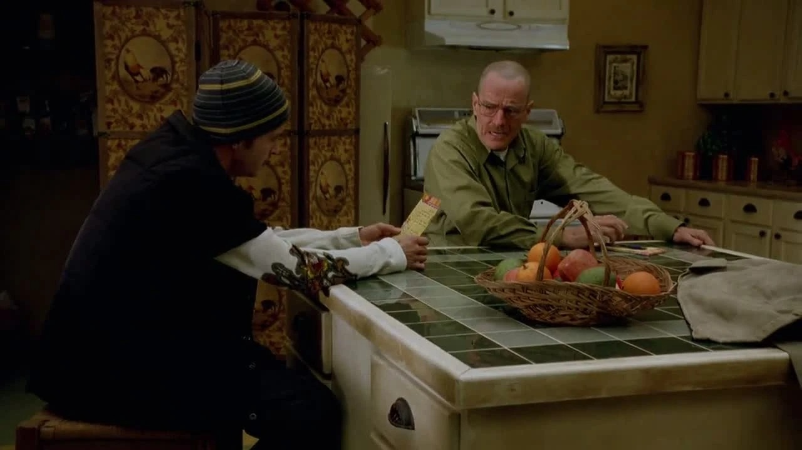
剧情事实杰西因创伤想卖掉房子。沃尔特交出从图科取回的钱，并宣布两人要每周供货；杰西指出自己从未同意，也弄不到相应原料。 [1][2]
给钱看起来像照顾，擅自承诺又复制了最初合作的不对等。沃尔特能把数字当作激励，因为实际采购和接触买家的阻力主要由杰西经历。对方的反对是具体的生产约束，不只是受伤后胆怯。
因此 →现实无法按承诺供货，下一次交易带着缺口到来。
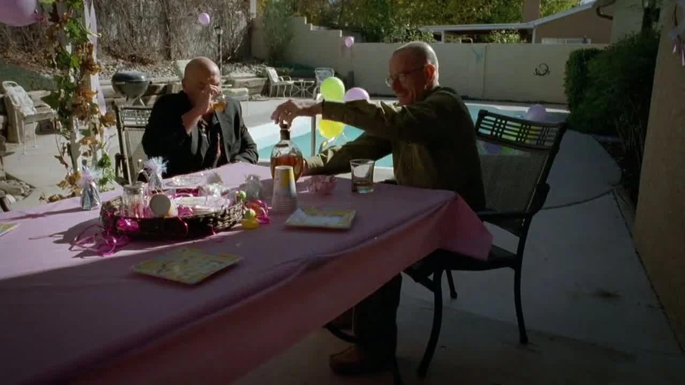
剧情事实斯凯勒向医生谈丈夫的精神和亲密状态，期待这是治疗奏效的信号。医生表示仍需完成疗程并进一步检查，不能据此下结论。 [1][2]
观众也容易把他的强硬和兴奋误读成病情好转。剧中医生在此明确保留判断，提醒人们外在活力可以来自很多体验。人物寻找希望的心情值得理解，确证与期待仍是不同层次的事。
因此 →现实里的不确定，没有减弱沃尔特对生意的进一步承诺。
剧情事实两人只带到部分约定数量，图科不满并提出代价。沃尔特要求预付款，把下一次供货承诺进一步提高。 [1][2]
他没有从兑现困难中收缩计划，而是用更大的承诺解决眼前压力。预付款看似获得了资本，也制造了必须及时偿还的义务。数量语言使一切像商业谈判，背后的执行保证却仍是图科的暴力。
因此 →更大的数字要求更多原料，瓶颈被进一步放大。
学校与市场都在追问谁应负责。沃尔特把一次威慑后的优势当成可延长的控制，杰西则不断指出没有被问过的限制。
为家人好，能替多少行为签字？
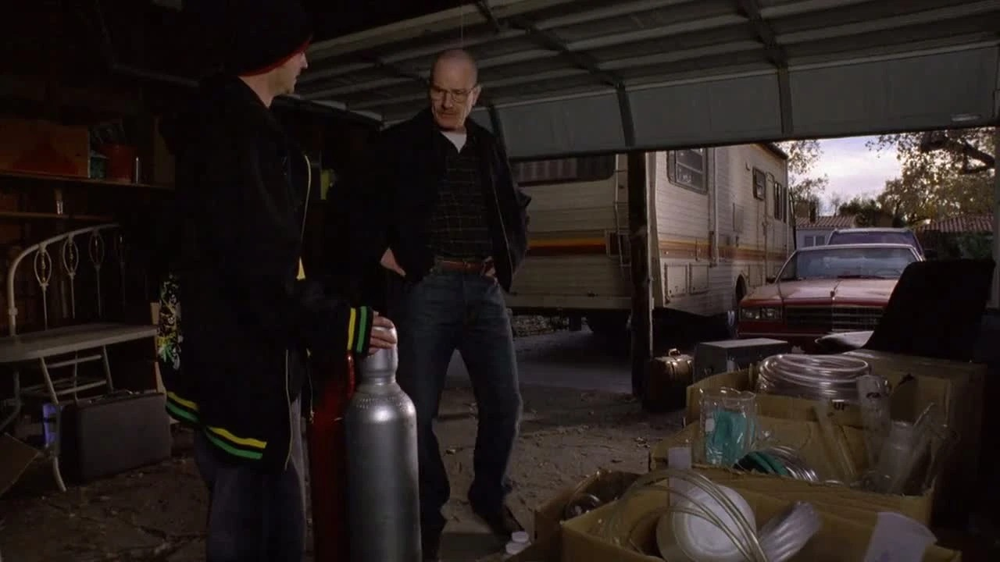
剧情事实沃尔特提出改换制作路线，交给杰西难以完成的采购清单。杰西想离开，沃尔特用相信自己、改变人生的话劝他继续。 [1][2]
励志语言在这里有明确的用途：让对方接受本来不愿承担的风险。技术上有替代路线，不代表采购、资金和安全问题都随之解决。当对方提出限制时，用成长叙事回答，会把拒绝的权利悄悄拿走。
因此 →杰西继续投入，花费和缺少的关键原料又把计划卡住。
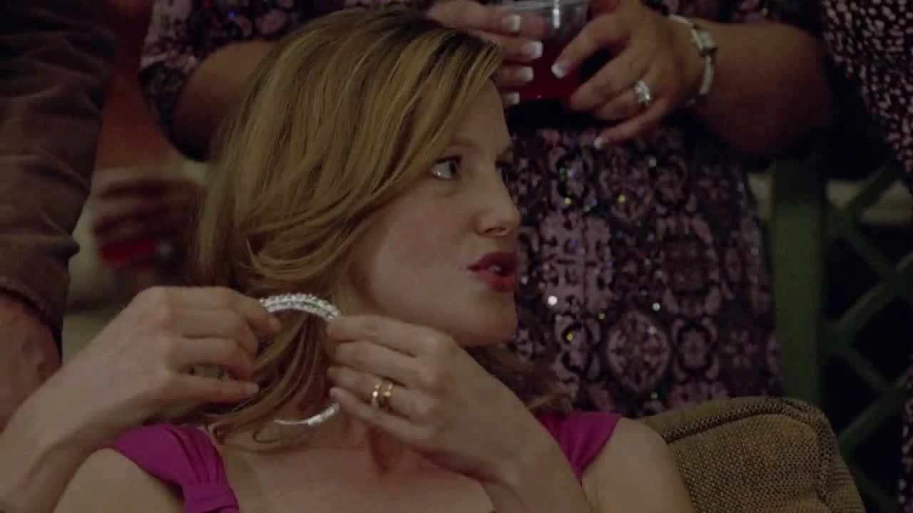
剧情事实家人为新生儿录下祝愿，沃尔特表达爱与牵挂。玛丽送出昂贵头饰，斯凯勒觉得与实际需要并不相称。 [1][2]
祝愿不必被一概判成虚假，问题在于爱不能独自证明后续行为合理。头饰也带出同样结构：送礼者的用心形象很显眼，礼物的来路与实用性却被藏到后面。两条秘密将在家庭内部相互照面。
因此 →这件显眼的礼物随后使收礼者陷入麻烦。
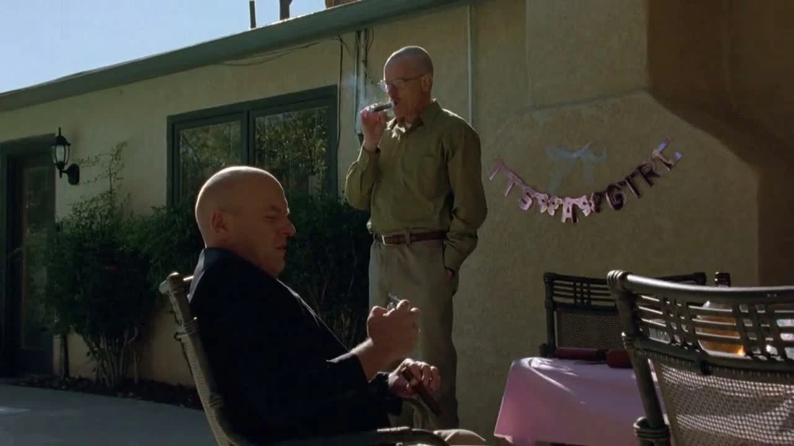
剧情事实沃尔特与汉克抽雪茄，谈论合法与非法的界线会随时间变化。汉克并未因此接受所有违法行为都可以被合理化。 [1][2]
沃尔特不是在进行一场与自己无关的课堂辩论。他把具体行为放进“界线并非永恒”的框架，试探自己的处境能否变得没那么严重。即使分类会变化，伤害与责任仍需要逐项面对。这里呈现的是人物的论证，不是本页提供法律结论。
因此 →寻找辩护的习惯，随后回到与妻子的对话里。
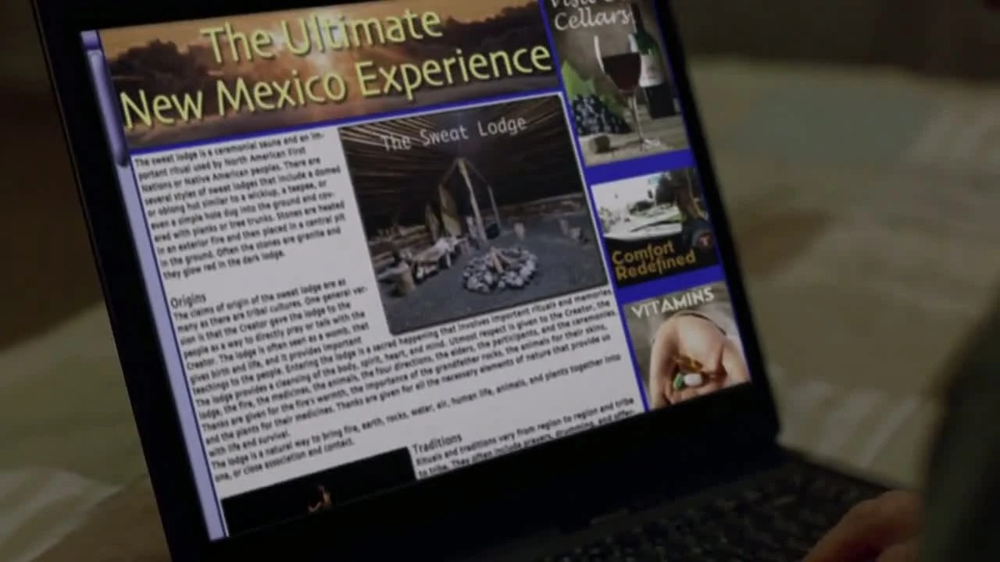
剧情事实沃尔特用汗屋疗愈解释周末离家。斯凯勒退头饰时被店家当作偷窃者，才知道礼物是赃物，靠临场应对离开。 [1][2]
夫妻两人的周末形成残酷对照：一个人主动制造可接受的故事，另一个人却因别人隐瞒来路而被迫为自己解释。所谓“替家人做事”，实际可能意味着让家人不知道风险，却先承担风险。
因此 →斯凯勒要求玛丽说明，另一边两位搭档准备亲自盗窃。
家庭派对、雪茄与头饰形成道德对照。与此同时，周末行程成为谎言，材料瓶颈又把二人推向新的犯罪。
技术难题解决后，真正的危险仍站在那里。
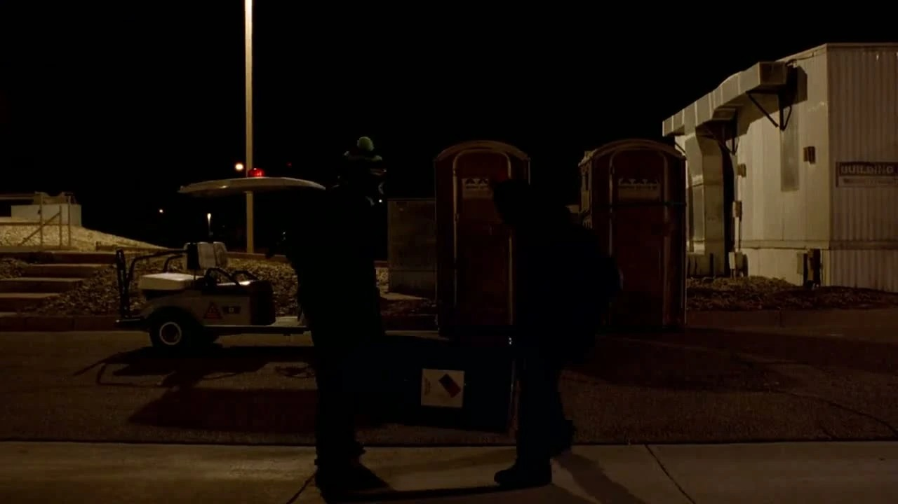
剧情事实采购资金不足以请人取得缺料，沃尔特决定与杰西亲自闯入仓库。两人限制保安行动，搬走一大桶原料。 [1][2]
这次没有一个全新的家庭需求突然出现，直接推动行动的是他们已经许下的供货量。每个技术解决方案，都需要更多违法行为来支撑它。场面的狼狈可以有黑色幽默，被限制自由的保安与不断增加的风险仍真实存在。
因此 →原料到手，制作地点却又出问题。
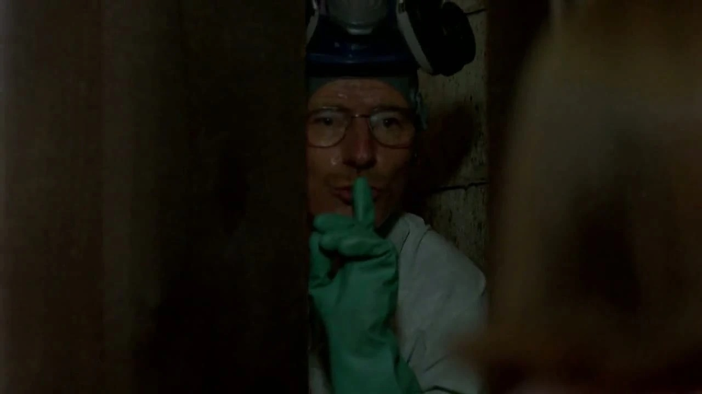
剧情事实房车故障后，两人把工作转到地下室。看房活动撞上制作现场，杰西驱赶访客；问到还需要多少钱，沃尔特只说还要更多。 [1][2]
杰西想出售的正是曾承受人命后果的住处，现在又被重新投入生产。沃尔特回答“更多”时，暂时没有给出一个足以停止的数字。生意不再只是达到某个家庭目标的工具，也开始有了不断延长自身的动力。
因此 →他们完成产出，未完成与风险的切割。
剧情事实玛丽不承认偷窃，斯凯勒为此痛苦。沃尔特说人有时会为家庭做事，并试问如果是自己，妻子会否离开或报警；斯凯勒明确警告他别试。 [1][2]
妻子谈的是一件已使她受辱的具体隐瞒，丈夫却把它借成对自己更严重行为的预先辩护。两类行为的规模与伤害并不相同，不能靠同一个“为家人”理由打包免除。她没有给出他期待的无条件容忍。
因此 →他继续走向交易现场，家庭的警告没有改变这一步。
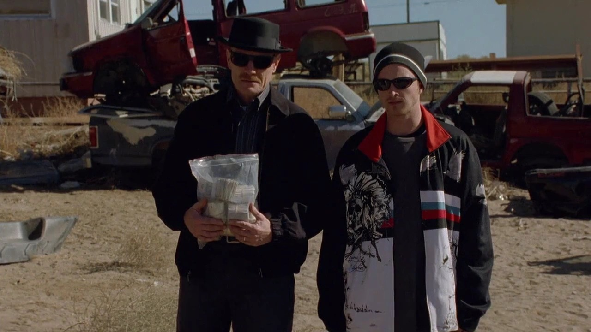
剧情事实图科试过蓝色成品后非常满意。No-Doze 插话维护他的权威，被他曲解为冒犯并打倒；沃尔特与杰西站在一旁，图科随后提到下周继续。 [1][2]
最可怕的地方，是暴力没有等到产品失败、价格争议或明确背叛。生意恰好成功，对方仍能因为一句话惩罚身边人。沃尔特上一集争来的位置，没有让规则变得稳定；能赚钱，只说明他们更有理由被留下。
因此 →第一季止于这个不安的现场；本页不补写 No-Doze 在下一季的处境。
两人成功供货，家人的秘密却没有得到承认；图科认可产品后的暴力，让“只做生意”的设想彻底失去安全感。
八位人物，三次关系截面。No-Doze 是本集已出现的随从；图只说明截至季终可见的行动与风险。
供货承诺已经作出，杰西的反对与学校的追问都没有使沃尔特停止。

供货者 / 想让承诺继续兑现的人
扩大收入并维持对生意的主导，也试探家人对越界的容忍。
技术、说服搭档的权威，以及图科已经给出的款项。
擅自承诺供货量，推动换工艺与盗窃原料，隐瞒周末行程，并在最终交易见证图科暴力。
他不断把眼前困难重新解释成下一道技术或意志问题。解决供货并没有解决关系中的危险，反而提高了退出的成本。
把上集的胜利转成搭档必须履行的义务。
从搭档的同意、礼物的来路、夫妻间的试探和图科的任意惩罚，追问谁实际拥有规则。
沃尔特把上集取得的威慑优势转成了固定供货量，没有先询问采购能力。杰西的反对包含清楚的事实：渠道、时间、原料与自己已经受过的伤。
每逢瓶颈，沃尔特又用技术替代或鼓励成长回应。这样可以推动任务继续，却让对方越来越难说“不”。合作如果只有许诺者的想象，没有执行者的同意，所谓共同事业就会不断把代价压向一端。
个人解读：有效的方案与对搭档的尊重分别判断，不能因为最后交货成功就取消此前的胁迫。
把短句放回发生的场景。对白不是人物全部动机的证明，也可能是他选择让别人听见的那一部分。
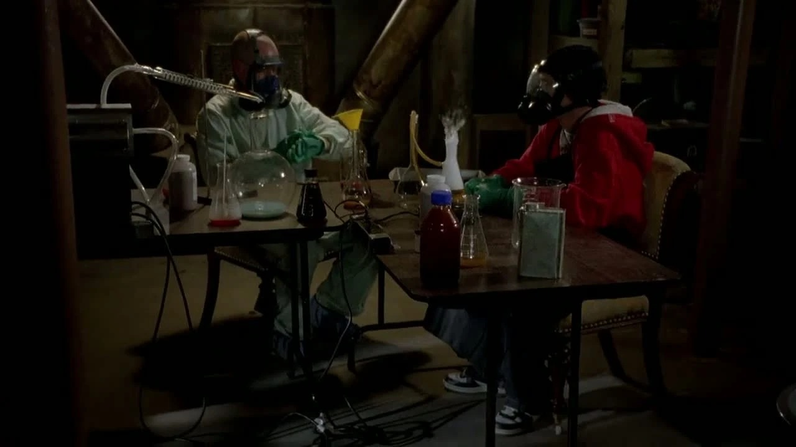
More.更多。中文自译
杰西问他在目前处境下究竟还需要多少钱，他只给出这一个词。
没有停止条件的需求，很容易让工具变成目的。这里不能替他断言从来不爱家人，却已经可以问：什么结果才足够让这件事结束？
英文据本集对白转录核对，共 16 个词；中文为本页自译。图片用于提示人物与场景，具体镜头边界见图注。
物件、空间和声音怎样让人物的变化变得可见。以下为画面观察与个人解读。
首集里沃尔特录告别，本集又为女儿录祝福。个人解读：两次都在维护家人记忆中的自己，行为的另一面却仍被藏住。
回到相关场景 ↗头饰显眼，却不解决育儿的具体需求。个人解读：展示自己的用心，与认真回应对方需要之间，存在可见距离。
回到相关场景 ↗亲密闲聊承载道德试探。个人解读：把问题说得抽象，会让具体受害者和行为规模暂时从谈话里消失。
回到相关场景 ↗汗屋页面提供一套可以被妻子接受的解释。个人解读：他把亲人支持康复的愿望，转成了隐藏另一种活动的便利。
回到相关场景 ↗看房与地下室制作撞在一起。个人解读：杰西希望离开的空间，又因供货压力变成无法离开的工作场所。
回到相关场景 ↗新的外观让产品获得辨识度，交易却没有稳定下来。个人解读：成品的成功只能解决需求，不能解决权力关系里的任意惩罚。
回到相关场景 ↗第一季从一个关于期限的家庭困境开始，最后落到一段没有稳定规则的生意里。沃尔特解决了越来越多的技术问题，也不断把承诺变成要求下一次越界的理由。
季终的真正悬念，不只是下一笔钱能否赚到。更难回避的问题是：当他把继续做下去叫作保护家庭，谁仍有机会知道真相、拒绝参与，或者要求他停下来？
回看第一季的最后一场交易 ↗剧透截至第一季第7集，包含本集结尾。不涉及后续集数或其他作品的揭示。 · 本篇止于此，不预告后续情节。